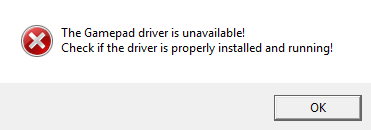

O aplicativo MAXJoypad substitui o seu controle de vídeo game real e possibilita jogar seus jogos de PC usando o poder do seu Smartphone ou Tablet Android.
SOLUÇÕES PARA WINDOWS 7
Ocorre o erro a seguir com o MAXJoypad no seu Windows 7 ?

Este erro ocorre normalmente quando seu Windows está sem algumas atualizações necessárias. Tente um dos seguintes itens para resolver:
1 - Baixe e instale a seguinte atualização para o Windows e após a instalação reinicie o computador:
Atualização Windows 7 - 64 bits
Atualização Windows 7 - 32 bits
2 - Caso o item anterior não resolva. Entre No Painel de Controle do Windows procure por Windows Update.
Pressione o botão "Verificar se há Atualizações". Após clique em "Instalar atualizações". Além disto, verifique se há atualizações ocultas. Clique em Restaurar atualizações ocultas e marque todas as atualizações de sistema e seguranca que aparecerem na lista. Reinicie o computador ao final de todas as atualizações.
3 - Caso os demais itens não resolvam. Desabilite a checagem de assinatura de driver no Windows 7. Quando o Windows 7 estiver iniciando aperte F8 e escolha a opção para desativar imposição de assinatura de driver. Lembre-se, essa opção desativa a checagem de assinatura de drivers do Windows temporariamente, ou seja, no próximo início do Windows a checagem é reativada. Para desabilitar a checagem da assinatura de drivers permanentemente, acesse esse Link.
4 - Entre em contato conosco no e-mail support@maxjoypad.com .